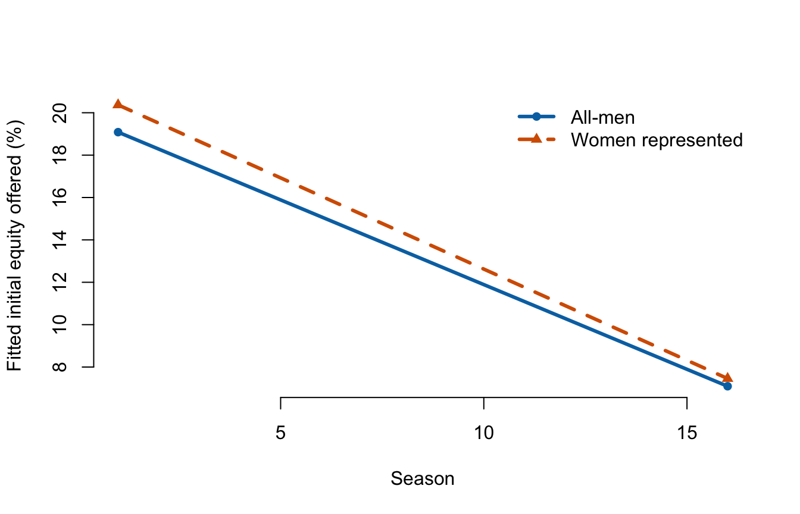
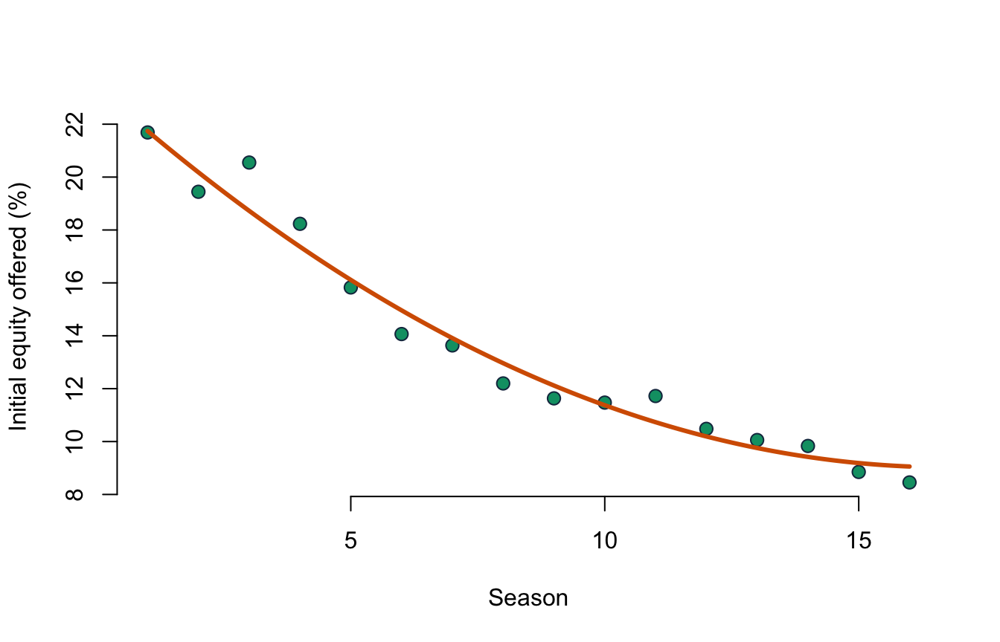

Lecture 6: Interactions and polynomial terms
- explain an interaction as a slope that depends on another variable;
- interpret main effects in a model containing an interaction;
- use centering to make lower-order terms more meaningful;
- fit and interpret a quadratic term without reading its coefficients separately;
- apply the hierarchy principle and communicate conditional predictions graphically.
Before class
Video preparation
Watch Stanford Statistical Learning
3.5
Extensions of the Linear Model and
7.1
Polynomials and Step Functions. Focus on why an interaction changes a
slope and why a polynomial remains a linear regression model in its
coefficients.
Review Mathematics Refresher: products, powers, and centering if needed.
In the model \(Y=\beta_0+\beta_1X+\beta_2D+\beta_3XD+\varepsilon\), write the line for \(D=0\) and for \(D=1\).
Check your preparation
For \(D=0\), \(E[Y\mid X,D=0]=\beta_0+\beta_1X\). For \(D=1\), \(E[Y\mid X,D=1]=(\beta_0+\beta_2)+(\beta_1+\beta_3)X\).
In class
Stanford explanations (review): 3.5 Extensions of the Linear Model and 7.1 Polynomials and Step Functions.
Interaction means “it depends”
An additive model assumes the slope of \(X\) is the same at every value of \(Z\):
\[ E[Y\mid X,Z]=\beta_0+\beta_1X+\beta_2Z. \]
Adding a product allows that slope to vary:
\[ E[Y\mid X,Z] =\beta_0+\beta_1X+\beta_2Z+\beta_3XZ. \]
The change in the conditional mean for a one-unit increase in \(X\) is
\[ \beta_1+\beta_3Z. \]
Thus \(\beta_3\) is a difference in slopes, not a standalone effect. Its units combine the variables. If \(X\) is measured in seasons and \(Z\) is an indicator, \(\beta_3\) is the difference in outcome units per season between the indicator groups.
A binary interaction
For this example only, women = 1 means the source classifies the presenting
team as all-women or mixed; women = 0 means all-men. It does not measure a
share of women or the full venture team. Seven unknown records are excluded.
Centre season at its sample mean:
\[ season\_c=season-\overline{season}. \]
Then the lower-order women coefficient compares groups at the average season
rather than at the unobserved Season 0.
##
## Call:
## lm(formula = equity_offered_pct ~ season_c * women + ask_100k,
## data = known_gender)
##
## Residuals:
## Min 1Q Median 3Q Max
## -15.871 -4.742 -1.290 3.412 82.689
##
## Coefficients:
## Estimate Std. Error t value Pr(>|t|)
## (Intercept) 13.62479 0.33545 40.616 < 2e-16 ***
## season_c -0.79938 0.06632 -12.053 < 2e-16 ***
## women 0.80697 0.41171 1.960 0.0502 .
## ask_100k -0.26776 0.05834 -4.590 4.83e-06 ***
## season_c:women -0.06146 0.09557 -0.643 0.5203
## ---
## Signif. codes: 0 '***' 0.001 '**' 0.01 '*' 0.05 '.' 0.1 ' ' 1
##
## Residual standard error: 7.62 on 1429 degrees of freedom
## Multiple R-squared: 0.1894, Adjusted R-squared: 0.1871
## F-statistic: 83.47 on 4 and 1429 DF, p-value: < 2.2e-16For all-men teams (women = 0), the fitted season slope is about \(-0.799\)
percentage points per season. For teams with women represented, it is
\[ -0.799+(-0.061)=-0.861. \]
The interaction estimate is \(-0.061\), with p-value about 0.520. This model does not provide evidence that the season trend differs between these two broad source-defined groups. It also does not prove the slopes are identical.

The horizontal axis is season and the vertical axis is fitted initial equity at the same average requested amount. Each line represents one source-defined group; its slope is the fitted change per season for that group, and their vertical separation is the fitted group difference at a given season. Graph the model because neither \(\beta_1\) nor \(\beta_2\) is an overall effect when an interaction is present.
The hierarchy principle
If a model contains \(XZ\), ordinarily retain both \(X\) and \(Z\), even when one lower-order term is not individually significant. The lower-order terms define the lines whose difference the interaction describes.
In R:
Polynomial terms model curvature
A quadratic conditional mean is
\[ E[Y\mid X=x]=\beta_0+\beta_1x+\beta_2x^2. \]
It remains a linear regression model because it is linear in the unknown coefficients \(\beta_0,\beta_1,\beta_2\).
The slope is not constant. A one-unit change from \(x\) to \(x+1\) changes the fitted mean by
\[ \beta_1+\beta_2(2x+1). \]
Therefore do not interpret \(\beta_1\) as the overall slope while \(x^2\) is in the model. Compare fitted values or graph the curve.
##
## Call:
## lm(formula = equity_offered_pct ~ season + I(season^2) + ask_100k,
## data = sharks)
##
## Residuals:
## Min 1Q Median 3Q Max
## -16.154 -4.549 -1.011 3.390 82.000
##
## Coefficients:
## Estimate Std. Error t value Pr(>|t|)
## (Intercept) 24.17168 0.82057 29.457 < 2e-16 ***
## season -1.71323 0.20567 -8.330 < 2e-16 ***
## I(season^2) 0.05103 0.01137 4.489 7.74e-06 ***
## ask_100k -0.27108 0.05740 -4.723 2.56e-06 ***
## ---
## Signif. codes: 0 '***' 0.001 '**' 0.01 '*' 0.05 '.' 0.1 ' ' 1
##
## Residual standard error: 7.57 on 1437 degrees of freedom
## Multiple R-squared: 0.1981, Adjusted R-squared: 0.1965
## F-statistic: 118.3 on 3 and 1437 DF, p-value: < 2.2e-16## Analysis of Variance Table
##
## Model 1: equity_offered_pct ~ season + ask_100k
## Model 2: equity_offered_pct ~ season + I(season^2) + ask_100k
## Res.Df RSS Df Sum of Sq F Pr(>F)
## 1 1438 83493
## 2 1437 82338 1 1154.5 20.149 7.737e-06 ***
## ---
## Signif. codes: 0 '***' 0.001 '**' 0.01 '*' 0.05 '.' 0.1 ' ' 1The partial F-test for adding season^2 has p-value below 0.001 in the
classical model. The fitted curvature is statistically detectable, but the
gain in adjusted \(R^2\) and the substantive shape should also be assessed.

The points are raw season means; the curve holds requested amount at its sample mean. Do not extrapolate the quadratic beyond Seasons 1–16: polynomials can turn sharply outside the observed range.
Extensions do not replace assumptions
Interactions and polynomials make the conditional mean more flexible. They do not solve dependence, selection, measurement error, heteroskedasticity, or unmeasured confounding. Choose terms from a substantive question, inspect the implied predictions, and report the relevant combined effects.
After class
Retrieval
- What does an interaction coefficient measure?
- Why centre a predictor before interacting it?
- State the hierarchy principle.
- Why is a quadratic model still a linear regression model?
- Why should a polynomial be graphed and not extrapolated casually?
Check your answers
- How one predictor’s slope changes with the other predictor.
- To make lower-order terms refer to a meaningful reference value such as the sample mean.
- Retain the component lower-order terms when including their interaction or higher-order term.
- It is linear in the unknown coefficients, even though it is curved in \(x\).
- Component coefficients do not equal one constant slope, and polynomial curves can behave unrealistically outside the data range.
Practice
- In \(Y=10+2X+3D-0.5XD\), write both group lines and interpret the interaction.
- Fit
season * womenwith and without centering season. Verify that fitted values and the interaction coefficient remain unchanged. - Fit the linear and quadratic season models and compare adjusted \(R^2\).
- Calculate the fitted change from Season 5 to 6 in the quadratic model.
- Explain why the non-significant interaction is not evidence that source gender composition never matters.
- State the units of the interaction coefficient in this model and interpret its estimate without using causal language.
Check your answers
For \(D=0\), the line is \(10+2X\). For \(D=1\), it is \(13+1.5X\). The \(D=1\) slope is 0.5 units smaller.
For example:
uncentered <- lm(equity_offered_pct ~ season * women + ask_100k, data = known_gender) centered <- lm(equity_offered_pct ~ season_c * women + ask_100k, data = known_gender) all.equal(fitted(uncentered), fitted(centered)) coef(uncentered)["season:women"] coef(centered)["season_c:women"]The fitted values agree and both interaction estimates are about \(-0.0615\). Centering changes the intercept and lower-order group coefficient, not fitted values, the interaction estimate, or model fit.
Extract with
summary(model)$adj.r.squared; adjusted \(R^2\) is about 0.186 for the linear model and 0.196 for the quadratic model.With estimates \(\beta_1\approx-1.713\) and \(\beta_2\approx0.0510\), the change is \(\beta_1+\beta_2(2\cdot5+1)\approx-1.15\) percentage points.
The test concerns one operationalisation, sample, model, and interaction; limited precision or misspecification can remain, and the source category is broad.
The unit is equity percentage points per season as a difference between groups. Holding requested amount fixed, the fitted seasonal slope for teams with women represented is 0.0615 percentage points per season more negative than for all-men teams; the two-sided test does not distinguish this difference from zero at 5%.
Continue to Tutorial 2: Multiple regression and extensions.
For a more formal treatment, see James et al., An Introduction to Statistical Learning, 2nd ed., Section 3.3.2 and Sections 3.6.4–3.6.6, and Nieuwenhuis, Statistical Methods for Business and Economics, Chapter 21.